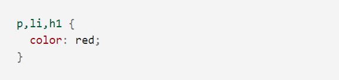

CSS (Cascading Style Sheets) — это код, который вы используете для стилизации вашей веб-страницы. Основы CSS помогут вам понять, что вам нужно для начала работы. Мы ответим на такие вопросы как: Как сделать мой текст черным или красным? Как сделать так, чтобы контент появлялся в определённом месте на экране? Как украсить мою веб-страницу с помощью фоновых изображений и цветов?
Так что же такое CSS?
Как и HTML, CSS на самом деле не является языком программирования. Это не язык разметки - это язык таблицы стилей. Это означает, что он позволяет применять стили выборочно к элементам в документах HTML. Например, чтобы выбрать все элементы абзаца на HTML странице и изменить текст внутри них с чёрного на красный, вы должны написать этот CSS:
Давайте попробуем: вставьте эти три строки CSS в новый файл в ваш текстовый редактор, а затем сохраните файл как style.css в вашей папке styles
Но нам всё равно нужно применить CSS к нашему HTML документу. В противном случае, CSS стиль не повлияет на то, как ваш браузер отобразит HTML документ. (Если вы не следили за нашим проектом, то прочитайте раздел Работа с файлами и Основы HTML , чтобы узнать, что вам нужно сделать в первую очередь.)
1. Откройте ваш файл index.html и вставьте следующую строку куда-нибудь в шапку, между тегом head и закрывающим тегом head:
2. Сохраните index.html и загрузите его в вашем браузере. И посмотрите что получится. Если текст вашего обзаца красный, примите поздравления! Вы написали первый код CSS!
Анатомия набора правил CSS
Давайте взглянем на вышеупомянутый CSS немного более подробно:
Вся структура называется набором правил (но зачастую для краткости "правило"). Отметим также имена отдельных частей:
Селектор (Selector)
Имя HTML-элемента в начале набора правил. Он выбирает элемент(ы) для применения стиля (в данном случае, элементы p ). Для стилизации другого элемента, просто измените селектор.
Свойства (Properties)
Способы, которыми вы можете стилизовать определённый HTML-элемент (в данном случае, color является свойством для элементов p). В CSS вы выбираете, какие свойства вы хотите затронуть в вашем правиле.
Значение свойства (Property value)
Справа от свойства, после двоеточия, у нас есть значение свойства, которое выбирает одно из множества возможных признаков для данного свойства (существует множество значений color, помимо red).
Обратите внимание на важные части синтаксиса:
- Каждый набор правил (кроме селектора) должен быть обёрнут в фигурные скобки {} .
- В каждом объявлении необходимо использовать двоеточие : , чтобы отделить свойство от его значений.
- В каждом наборе правил вы должны использовать точку с запятой ; , чтобы отделить каждое объявление от следующего.
Таким образом, чтобы изменить несколько значений свойств сразу, вам просто нужно написать их, разделяя точкой с запятой
Выбор нескольких элементов
Вы также можете выбрать несколько элементов разного типа и применить единый набор правил для всех из них. Добавьте несколько селекторов, разделённых запятыми. Например:
Разные типы селекторов
Существует множество различных типов селектора. Выше мы рассматривали только селектор элементов , который выбирает все элементы определённого типа в HTML документе. Но мы можем сделать выбор более конкретным. Вот некоторые из наиболее распространённых типов селекторов:
Существует ещё много селекторов для изучения, и вы можете найти более подробный список в нашем Руководстве селекторов (en-US).
Заключение
Здесь мы узнали только самую поверхность CSS. Чтобы узнать больше, перейдите на нашу страницу изучения CSS..